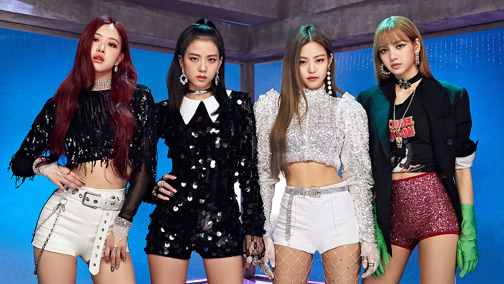

About Jisoo (singer, born 1995)
Kim Ji-soo (Korean: 김지수; born January 3, 1995), better known mononymously as Jisoo, is a South Korean singer and actress. She made her debut as a vocalist in August 2016 as a member of the girl group Blackpink under YG Entertainment.
Jisoo is a member of the K-pop group Blackpink
Kim debuted as a member of Blackpink on August 8, 2016. She is the oldest member of the group.
Other members of Blackpink
Blackpink is a South Korean girl group formed by YG Entertainment and debuted on August 8, 2016.
Facts about Jisoo
- She's the main local of Blackpink
- She's the oldest member of the group
- Her smile is bright
- She has a 4-D personality
- Jisoo can play piano but not the guitar
- She can speak Korean, Japanese and basic Chinese
- Jisoo doesn’t speak English (because she’s embarrassed to do it) but she can understand it very well
- She has a pet dog named Dalgom